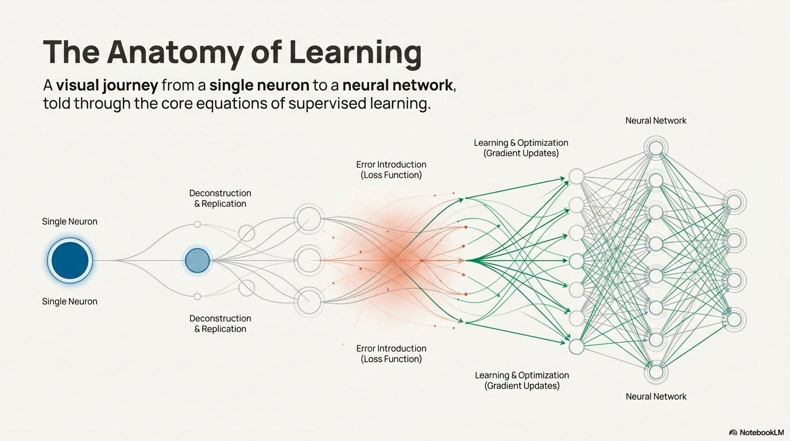
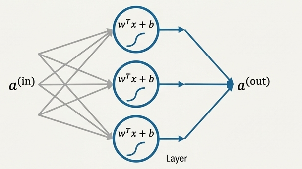

Neural Networks: A Beginner's Guide
This outline teaches neural networks by starting with the simplest linear model, building up the math step by step (dot products, projections, activations, gradients), and showing how stacking these basic units creates the full power of deep learning.
This gives learners a complete, grounded understanding of neural networks from the bottom up.
Focused, First‑Principles Framing
For many learners, the term neural network evokes a sense of overwhelming complexity. But when you strip a neural network down to its first principles, a very different picture emerges. Beneath the surface, every operation reduces to simple mathematical and geometric ideas:
“No matter what engineering field you’re in, you learn the same basic science and mathematics. And then maybe you learn a little bit about how to apply it.” — Noam Chomsky
Neural Networks From First Principles
Start with the big idea
Neural networks look complicated, but at their core they are built from:
- linear combinations
- dot products
- projections
- simple nonlinear functions
Everything else is just these pieces repeated at scale.
1. Define the learning system
A neural network is a learning system made of layers, and each layer is a collection of neurons that process the same inputs in parallel. The output of one layer becomes the input to the next.

2. The Neural Network is made of layers
A layer is a collection of neurons that process the same inputs in parallel. The output of one layer becomes the input for the next layer.
3. Zoom in: what is a neuron?
A neuron is nothing more than:
- A linear unit:
z = w · x + b - Followed by an activation function
- linear regression → identity
- logistic regression → sigmoid
- neural networks → ReLU, tanh, sigmoid, etc.
This linear‑plus‑activation structure is the core building block of every neural network.


4. One input
Break the neuron down to its smallest form:
ŷ = w x + b
This is exactly simple linear regression.
This introduces:
- prediction
- residuals
- loss (MSE)
- gradients
- gradient descent
- parameter updates
This is the first complete “learning loop.” Now we have the basic model in the learning system. Next comes the objective (loss) and optimization — the way the model learns.